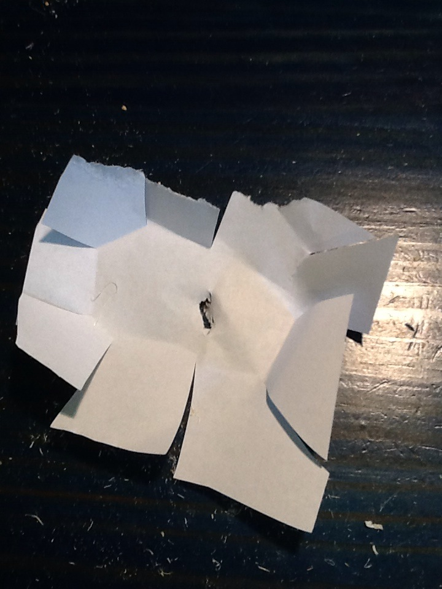
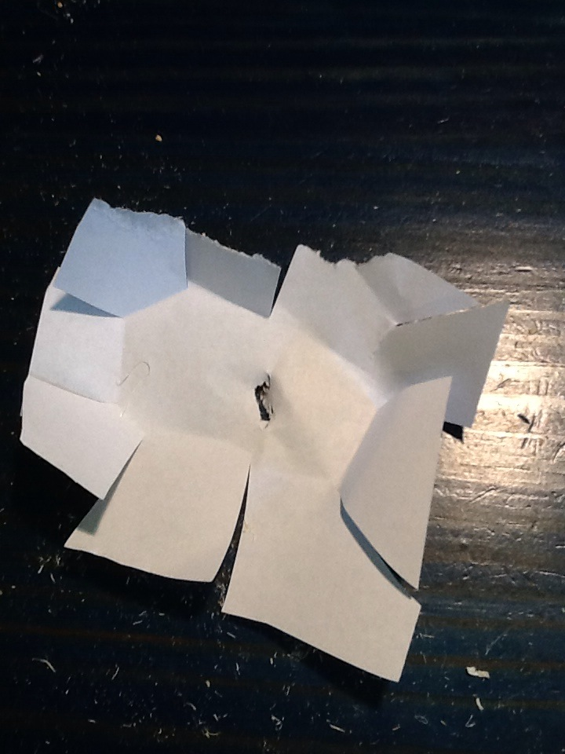
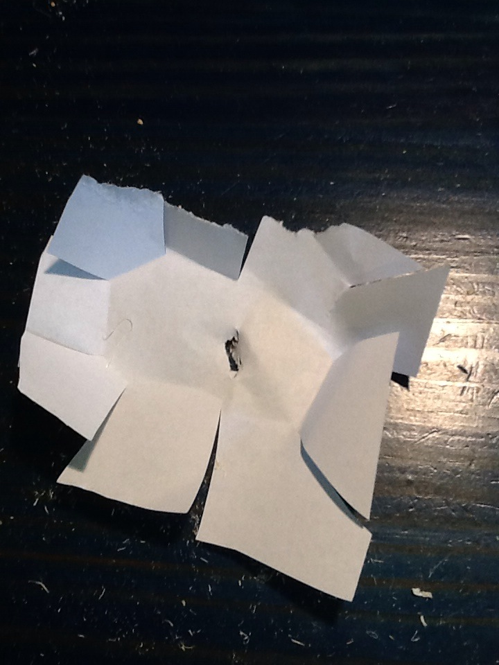
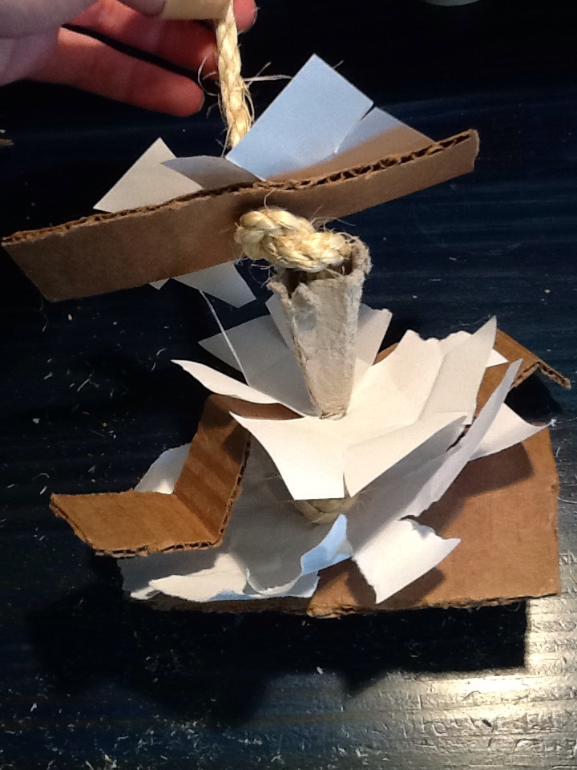

Chew Stack
MATERIALS: rope, paper, cardboard
1. Cut a piece of rope about 18-24" long, depending on how big
you want the toy to be.

2. Cut several pieces of cardboard and paper in various shapes
and sizes. You can also use pieces of egg cartons. Poke holes
in the center of each piece. Paper can be cut, ripped, or crumpled
at the edges so it's not flat.

 


3. String everything onto the rope, and tie knots every few
inches in the rope. Use the extra rope at the top of the strand
to hang in your bird's cage.
